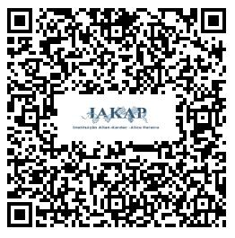

Conta para doações (dedutível do IR)
IAKAP - INSTITUIÇÃO ALLAN KARDEC - ALICE PEREIRA
- CNPJ nº 44.277.424/-73
- Banco Santander
- Agência: 0140
- Conta corrente: 13.080039-9
Se preferir pode enviar um PIX
- Chave PIX CNPJ: 44.277.424/0001-73
Como a IAKAP é uma entidade reconhecida como de utilidade pública, empresas que optem pela declaração de suas doações à instituição do imposto de renda.
Você pode doar utilizando o QR Code ou a chave copia e cola
Verifique sempre o nome se é de nossa instituição antes de proceguir com o envio da doação
PIX COPIA E COLA
00020126360014BR.GOV.BCB.PIX0114442774240001735204000053039865802BR5925IAKAP – INSTITUICAO ALLAN6009Guarulhos62070503***6304AF41